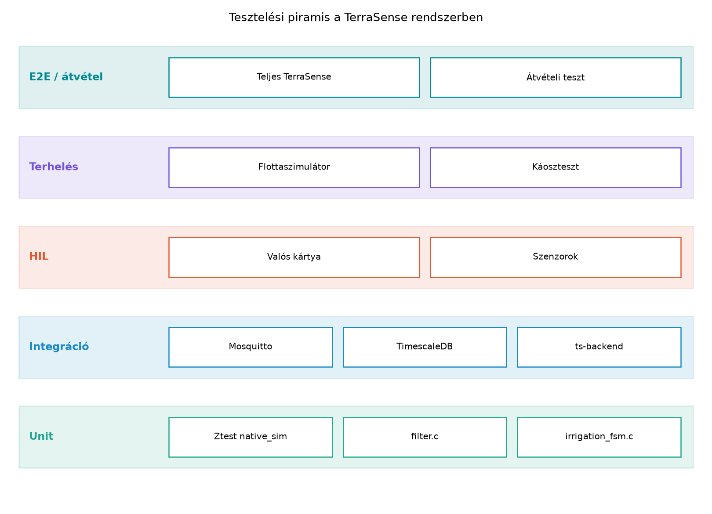
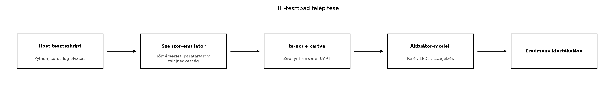

A TerraSense fejlesztése során a ts-node firmware-t és a
ts-backend ingestjét külön-külön már teszteltük, de a
valódi hibák gyakran a határokon jelentkeznek: amikor a broker
újraindul, a hálózat megszakad, vagy száz virtuális node egyszerre küldi
a telemetriát. Egy integrációs teszt például felfedi, hogy a
ts-backend nem kezeli a duplikált MQTT-üzeneteket, vagy
hogy a TimescaleDB séma nem felel meg a valós üzenetformátumnak. A
terheléses teszt pedig megmutatja, hogy az ingest szűk keresztmetszete
nem a broker, hanem a backend tranzakciókezelése. Ebben az alfejezetben
felépítjük azt a tesztelési piramist, amely a hoston futó unit
tesztektől a konténeres integrációs teszteken át a szimulált flottáig és
a valódi hardvert használó HIL-tesztpadig vezet.
Definíció. A tesztelési piramis (test pyramid) a szoftvertesztelés klasszikus modellje, amely a teszteket végrehajtási költségük és számuk szerint rétegekbe rendezi: alul a gyors, sok apró unit teszt, középen a kisebb számú integrációs teszt, felül pedig a kevés, lassú rendszer- vagy end-to-end (E2E) teszt áll. IoT-rendszerben a piramis kiegészül a HIL (hardware-in-the-loop) és a terheléses teszt szintjével, mert a szoftver helyessége mellett a hardverrel való együttműködést és a skálázhatóságot is igazolni kell.
A TerraSense esetében a piramis rétegei a következőképpen alakulnak.
A legal só réteg a ts-node firmware hoston futtatott Ztest
unit tesztjei, amelyeket az Eszközszoftver
tesztelése a hoston alfejezetben készítettünk el. Fölötte az
integrációs tesztek a ts-backend és a ts-gw
egyes komponenseit valódi függőségekkel (Mosquitto, TimescaleDB)
tesztelik konténerekben. A terheléses teszt sok virtuális node-ot
szimulál, és azt vizsgálja, hogy a backend képes-e lépést tartani a
telemetriaárammal. A HIL-tesztpad valódi fejlesztőkártyát és szenzorokat
kapcsol a teszthurokba, hogy a hardverközeli hibákat is felfedje. Végül
a záróprojekt átvételi tesztje a teljes rendszert ellenőrzi.

Az ábra szöveges leírása: a piramis alján a legtöbb, leggyorsabb
teszt található (filter.c, irrigation_fsm.c
Ztest tesztjei); fölötte az integrációs tesztek a backend és a
broker/adatbázis együttműködését ellenőrzik; a HIL-tesztpad valódi
mikrovezérlőt használ; a terheléses és E2E tesztek a legritkábbak, de a
legnagyobb lefedettséget adják.
Definíció. A HIL-teszt (hardware-in-the-loop) olyan tesztelési módszer, amelyben a valódi beágyazott hardver fut, de a környezetét (szenzorjelek, aktuátorok, rádiós hálózat) szimulátorok vagy laboratóriumi műszerek helyettesítik. Így a firmware a tényleges perifériákkal és időzítésekkel fut, miközben a tesztkörnyezet determinisztikusan előállítható és ismételhető.
Definíció. A terheléses teszt (load test) a rendszer viselkedését méri a várható vagy annál nagyobb terhelés alatt, például sok eszköz egyidejű üzenetküldése esetén. Célja a átviteli képesség, a késleltetés és a erőforrás-felhasználás számszerűsítése, valamint a szűk keresztmetszetek azonosítása.
A tesztelési szintek közötti választás mindig a hiba költsége és a teszt végrehajtási ideje közötti kompromisszum. Az alábbi táblázat összefoglalja a fő szempontokat.
| Szint | Milyen kérdésre válaszol? | Környezet | Gyakoriság | Költség |
|---|---|---|---|---|
| Unit | Helyes-e egy függvény vagy modul? | Host, mockokkal | Minden commitnál | Alacsony |
| Integráció | Együttműködnek-e a komponensek? | Konténerek, valódi broker/DB | Napi, merge-kor | Közepes |
| HIL | Működik-e a firmware a hardverrel? | Fejlesztőkártya, műszerek | Kiadás előtt | Magas |
| Terhelés | Bírja-e a várható flottaméretet? | Szimulált flotta | Terhelési kampányban | Közepes |
| E2E | Megfelel-e a teljes rendszer a követelményeknek? | Teljes stack | Átvételkor | Magas |
A TerraSense fejlesztése során az a gyakorlati szabály, hogy minden új backend-funkcióhoz legalább egy integrációs teszt tartozzon, a terheléses tesztet pedig a flottaméret tervezésekor (például „100 node, 1 Hz telemetria”) futtassuk. A HIL-t a Zephyr BSP vagy az alacsony szintű periféria-illesztő módosításakor éri meg bevetni.
Munkakönyvtár:
mkdir -p ~/iot-labor/i063 && cd ~/iot-labor/i063A labor előfeltétele a Ingest: MQTT-ből a
backendbe, idempotensen alfejezetben elkészített
ts-backend projekt, amelyet a
~/iot-labor/i044/ts-backend könyvtárban tárolunk. A labor
során létrehozzuk a projekt src/test/java/ alá az
integrációs tesztet, és a munkakönyvtárba a flottaszimulátort.
Először hozzuk létre a ts-backend Maven projektben a
IngestIntegrationTest.java tesztosztályt. A teszt a
Testcontainers segítségével elindítja a Mosquitto brokert és a
TimescaleDB-t, majd a Spring Boot alkalmazást a teszthez injektált
TelemetryRepository-vel ellenőrzi. A MQTT-üzenetet a Paho
klienssel publikáljuk.
package com.terrasense.backend.ingest;
import org.junit.jupiter.api.Test;
import org.springframework.beans.factory.annotation.Autowired;
import org.springframework.boot.test.context.SpringBootTest;
import org.springframework.test.context.DynamicPropertyRegistry;
import org.springframework.test.context.DynamicPropertySource;
import org.testcontainers.containers.GenericContainer;
import org.testcontainers.containers.wait.strategy.Wait;
import org.testcontainers.junit.jupiter.Container;
import org.testcontainers.junit.jupiter.Testcontainers;
import org.testcontainers.utility.DockerImageName;
import java.time.Duration;
import java.util.List;
import static org.assertj.core.api.Assertions.assertThat;
@Testcontainers
@SpringBootTest(properties = {"mqtt.enabled=true"})
class IngestIntegrationTest {
@Container
static GenericContainer<?> mosquitto = new GenericContainer<>(
DockerImageName.parse("eclipse-mosquitto:2"))
.withExposedPorts(1883)
.waitingFor(Wait.forListeningPort());
@Container
static GenericContainer<?> timescale = new GenericContainer<>(
DockerImageName.parse("timescale/timescaledb:latest-pg16"))
.withEnv("POSTGRES_USER", "ts")
.withEnv("POSTGRES_PASSWORD", "ts")
.withEnv("POSTGRES_DB", "terrasense")
.withExposedPorts(5432)
.waitingFor(Wait.forListeningPort());
@DynamicPropertySource
static void overrideProps(DynamicPropertyRegistry registry) {
registry.add("spring.datasource.url",
() -> "jdbc:postgresql://" + timescale.getHost()
+ ":" + timescale.getMappedPort(5432) + "/terrasense");
registry.add("spring.datasource.username", () -> "ts");
registry.add("spring.datasource.password", () -> "ts");
registry.add("mqtt.broker.uri",
() -> "tcp://" + mosquitto.getHost()
+ ":" + mosquitto.getMappedPort(1883));
}
@Autowired
private TelemetryRepository repository;
@Test
void telemetryIngestIsIdempotent() throws Exception {
// Előfeltétel: az ingest már feliratkozott a topicra, ezt a Spring indítja.
String payload = """
{"node_id":"n001","seq":42,"ts":1700000000000,
"temperature":21.5,"humidity":55.0,"moisture":30.0}
""";
PahoMqttClient client = new PahoMqttClient(
"tcp://" + mosquitto.getHost() + ":" + mosquitto.getMappedPort(1883),
"test-publisher");
client.publish("terrasense/gh1/n001/telemetry", payload);
// Várunk, amíg az ingest feldolgozza.
Thread.sleep(1000);
List<TelemetryEntity> rows = repository.findByNodeIdAndSeq("n001", 42);
assertThat(rows).hasSize(1);
// Ugyanaz az üzenet újra: idempotens, nem duplázódik.
client.publish("terrasense/gh1/n001/telemetry", payload);
Thread.sleep(1000);
rows = repository.findByNodeIdAndSeq("n001", 42);
assertThat(rows).hasSize(1);
client.disconnect();
}
}A PahoMqttClient egy kis segédosztály; a laborban a
paho-mqtt-client Maven-függőséget kell hozzáadni a
pom.xml-hez
(org.eclipse.paho:org.eclipse.paho.client.mqttv3:1.2.5). A
teszt a mvn test paranccsal futtatható a ts-backend
projektben. Várt kimenet: BUILD SUCCESS, mert a duplikált
üzenet nem okoz sorduplikációt.
A terheléses teszthez hozzunk létre egy Python szimulátort, amely sok
virtuális node-ot reprezentál, és egyetlen MQTT-klienssel publikál
minden node topicjára. A script a paho-mqtt csomagot
használja (pip3 install paho-mqtt). A node_id
és a seq minden üzenetben egyedi, a telemetria értékei
determinisztikus zajjal változnak.
#!/usr/bin/env python3
import argparse
import json
import random
import time
import paho.mqtt.client as mqtt
def gen_payload(node_id, seq):
return json.dumps({
"node_id": node_id,
"seq": seq,
"ts": int(time.time() * 1000),
"temperature": round(20 + random.uniform(-2, 2), 2),
"humidity": round(50 + random.uniform(-10, 10), 1),
"moisture": round(30 + random.uniform(-5, 5), 1),
})
def main():
ap = argparse.ArgumentParser()
ap.add_argument("--broker", default="localhost")
ap.add_argument("--port", type=int, default=1883)
ap.add_argument("--nodes", type=int, default=50)
ap.add_argument("--interval", type=float, default=1.0)
ap.add_argument("--duration", type=float, default=30.0)
args = ap.parse_args()
client = mqtt.Client(client_id="flotta-szim")
client.connect(args.broker, args.port, 60)
client.loop_start()
start = time.time()
seq = 0
total = 0
while time.time() - start < args.duration:
for n in range(args.nodes):
node = f"n{n+1:03d}"
topic = f"terrasense/gh1/{node}/telemetry"
payload = gen_payload(node, seq)
client.publish(topic, payload, qos=1)
total += 1
seq += 1
time.sleep(args.interval)
# Mérjük az átviteli sebességet és a késleltetést a logokból; itt csak számlálunk.
print(f"Elküldött üzenetek: {total}", flush=True)
client.loop_stop()
client.disconnect()
if __name__ == "__main__":
main()A szimulátort a következőképpen futtathatjuk, miután a
ts-backend és a Mosquitto fut (a TerraSense stackből vagy a
Testcontainers-ből):
python3 flotta-szimulator.py --broker localhost --port 1883 --nodes 100 --interval 0.5 --duration 30A terheléses teszt során a ts-backend ingestjét figyeljük a Megfigyelhetőség végponttól végpontig alfejezetben bevezetett metrikákkal (például az ingest sebessége üzenet/s-ban, a feldolgozási késleltetés percentilisei). A várt kimenet nem a pontos szám, hanem az, hogy a backend hosszabb időn át stabilan feldolgozza a beérkező üzeneteket, és a TimescaleDB lekérdezésekben a rekordok száma egyezik az elküldött üzenetek számával (az idempotens törlés miatt), illetve a monitorozott késleltetés elfogadható marad.
A ts-node firmware valódi hardveren történő
teszteléséhez egy HIL-tesztpadot építünk. A tesztpad felépítése a
következő: a fejlesztőkártya (például egy Zephyr által támogatott ARM
kártya) a rajta futó ts-node firmware-rel; a szenzorok
helyett egy programozható szenzor-emulátor (például egy másik
mikrovezérlő vagy egy digitális-analóg konverter), amely a hőmérséklet,
páratartalom és talajnedvesség jeleit adja; az aktuátor (öntözőszelep)
helyett egy relé vagy LED, amelynek állapotát a host méri. A host futó
tesztkliens a UART vagy ethernet kapcsolaton kapja a firmware logjait,
és a tesztforgatókönyv vezérli az emulátort, valamint ellenőrzi a
firmware reakcióit.

A HIL-tesztpad előnye, hogy a firmware a tényleges
periféria-időzítésekkel fut, így a megszakítások, az ADC kalibráció és a
watchdog viselkedése is ellenőrizhető. A native_sim ezt nem
helyettesíti, de a HIL-tesztpad drága és lassú, ezért csak a kritikus
hardverfüggő részekhez használjuk, például a száraz érintkező
megszakításának vagy az alvásból ébredésnek a teszteléséhez.
A terheléses tesztet kiegészíthetjük káoszteszttel (chaos testing), amely során szándékosan hibákat idézünk elő a rendszerben, hogy megfigyeljük a helyreállást és az üzenetvesztés nélküli kézbesítést. Két tipikus jelenet a TerraSense esetében:
Broker-újraindítás: a flottaszimulátor futása közben a Mosquitto konténert leállítjuk és újraindítjuk. Az MQTT 5-ös kliensek (vagy a QoS 1/2 munkamenetek) újracsatlakoznak, és a ts-backend idempotens ingestje garantálja, hogy a duplikált üzenetek ne szennyezzék az adatbázist. A teszt sikeres, ha az újraindítás után a backend nem veszt el üzenetet, és nem rögzít duplikátumot.
Hálózatkiesés a gateway és a backend között: a
ts-gw store-and-forward puffere tárolja a telemetriát, amíg
a kapcsolat helyreáll, majd visszatölti az MQTT-n keresztül. A teszt
során a gateway hálózati interfészét leszűrjük (például
iptables DROP), majd visszaengedjük, és ellenőrizzük, hogy
a visszatöltés sorrendje és az seq sorszámok monotonok
maradnak.
| Hibatünet | Ok | Javítás |
|---|---|---|
A IngestIntegrationTest BUILD FAILURE a
TimescaleDB kapcsolatnál |
A konténer nem állt készen, vagy a JDBC URL hibás | Ellenőrizzük a Wait.forListeningPort()-ot; a
@DynamicPropertySource-ban a
getMappedPort(5432) értéket használjuk; a TimescaleDB
alapértelemezett adatbázisa ne ütközzön a ts-backend
migrációjával |
A terheléses teszt során a ts-backend CPU-ja 100%, és a
késleltetés nő |
A telemetria feldolgozása szinkron, egy szálon történik, vagy a tranzakció túl nagy | A kódban az ingest aszinkron, kötegelt beszúrással dolgozik; a
@Async annotációt ellenőrizni |
| A káoszteszt után a TimescaleDB-ben duplikált rekordok jelennek meg | Az idempotencia kulcs (node_id, seq) nem
egyedi a séma szerint, vagy az ingest nem ellenőrzi a duplikátumot |
A repository-ban egyedi megszorítást kell létrehozni, és az
ingestben INSERT ... ON CONFLICT DO NOTHING-et
használni |
| A HIL-tesztpadon a firmware nem válaszol | A soros port nem megfelelő, vagy a firmware assert miatt leállt | A hoston a dmesg-ben ellenőrizzük az USB-TTL eszközt; a
logokban keressük a watchdog vagy assert üzeneteket |
Azt hinni, hogy a unit tesztek elégségesek. A hoston futó Ztest tesztek gyorsak, de nem fedik fel a brokerrel való MQTT-kézfogás, a hálózati késleltetés vagy a sémaeltérés hibáit. Az integrációs teszt nélkül a backend és a broker együttműködését csak élesben tesztelnénk.
A terheléses tesztet a valós flotta méretével futtatni. A szimulátor által generált üzenetek nem helyettesítik a valódi eszközök hálózati viselkedését (például a rádiós ütközéseket vagy a változó késleltetést), ezért a kapott átviteli sebesség felső becslés. A terheléses teszt célja nem a pontos szám, hanem a szűk keresztmetszet megtalálása.
Az idempotencia teszt elhagyása. Ha az ingest
csak a ts időbélyeg alapján szúr be, akkor a QoS 1-es
újraküldés duplikátumot okozhat. Az integrációs tesztben ezért mindig
teszteljük a node_id + seq párost.
A HIL-tesztpadot a teljes firmware tesztelésére
használni. A HIL drága, ezért csak a hardverfüggő kódot
tesztelje; a logikát a hoston, a native_sim-mel
teszteljük.
(a) Fogalmi kérdés Ismertesse, miért nem elég a
hoston futó unit tesztek a ts-backend ingestjének hibáinak
felderítésére. Milyen hibatípusokat fed fel az integrációs
teszt?
(b) Tervezési feladat Tegyük fel, hogy a TerraSense flottája 200 node-ot tartalmaz, és mindegyik másodpercenként egy telemetriaüzenetet küld. Az ingest feldolgozási ideje üzenetenként átlagosan 5 ms. Számítsa ki, hány üzenet érkezik másodpercenként, és mekkora a backend processzor kihasználtsága, ha egyetlen szálon dolgozik fel. Számoljon azzal, hogy a feldolgozás során a CPU 80%-ban a backend logikát, 20%-ban a rendszer fut. (A pontos műveleti idő illusztratív, a valós méréshez profilozás kell.)
(c) Implementációs feladat Egészítse ki a
flottaszimulátort úgy, hogy a seq sorszám minden node-hoz
külön, 1-től indulva növekedjen, és a szimulátor a futás végén kiírja az
összes elküldött üzenet számát és a szimulátor által mért átlagos
küldési sebességet (üzenet/s). A kódot a
~/iot-labor/i063/flotta-szimulator.py fájlba mentse, és
futtassa --nodes 20 --duration 10 paraméterekkel. Várható
kimenet: a script a szimuláció végén kiírja a teljes üzenetszámot és a
sebességet.
(d) Hibakeresési feladat A terheléses teszt
során a ts-backend ingestje időnként ConnectionRefused
hibát dob a broker felé, amikor a broker újraindít. Milyen beállítással
lehet a backend MQTT-kliensét automatikus újracsatlakozásra bírni? Írja
le a Spring Boot application.properties fájlban megadható
mqtt.client.autoReconnect és
mqtt.client.cleanSession kulcsok közötti különbséget, és
indokolja, melyiket választaná a TerraSense-nél a QoS 1 és az idempotens
ingest miatt.
Megoldás: A unit tesztek kizárólag a függvény logikáját ellenőrzik mockolt függőségekkel. Nem fedik fel a valódi brokerrel való kapcsolat hibáit (például az MQTT 5 tulajdonságok félreértelmezését), a TimescaleDB sémájának eltérését, vagy a hálózati késleltetésből adódó sorrendiségi problémákat. Az integrációs teszt valódi konténerekben futtatja a komponenseket, így ezek a hibák reprodukálhatók.
Megoldás: Az üzenetek másodpercenkénti száma:
A feldolgozási idő összesen:
Mivel a CPU 20%-a rendszerfutás, a backend logika eléri a 100%-os kihasználtságot. Ezért párhuzamosítani kell a feldolgozást, vagy kötegelt beszúrást használni a TimescaleDB-be, különben a késleltetés növekszik és a backend túlterhelődik. A számítás illusztratív, a tényleges érték mérést igényel.
seq node-onkénti kezelésére és a sebesség mérésére:import time
seq_per_node = {}
start = time.time()
total = 0
while time.time() - start < args.duration:
for n in range(args.nodes):
node = f"n{n+1:03d}"
seq_per_node.setdefault(node, 0)
seq_per_node[node] += 1
topic = f"terrasense/gh1/{node}/telemetry"
payload = gen_payload(node, seq_per_node[node])
client.publish(topic, payload, qos=0)
total += 1
time.sleep(args.interval)
elapsed = time.time() - start
print(f"Összes üzenet: {total}")
print(f"Átlagos küldési sebesség: {total / elapsed:.2f} üzenet/s")Futtatás után például Összes üzenet: 200 és
Átlagos küldési sebesség: 20.00 üzenet/s (mert 20 node, 10
másodperc, 1 Hz). A pontos érték a futtatástól függ.
mqtt.client.autoReconnect=true hatására a kliens
automatikusan újracsatlakozik, ha a kapcsolat megszakad. A
cleanSession (MQTT 3.1.1-ben) vagy cleanStart
(MQTT 5-ben) azt szabályozza, hogy a broker törli-e a munkamenetet az
újracsatlakozáskor. A TerraSense-nél a cleanSession=false
és a QoS 1 használata mellett a broker puffereli az offline időben
érkező üzeneteket, és a backend a visszacsatlakozás után megkapja őket.
Az idempotens ingest gondoskodik a duplikátumok kiszűréséről. Ezért
autoReconnect=true és cleanSession=false a
helyes választás.Az alfejezetben kiépítettük a TerraSense tesztelési piramisát, amely
a hoston futó Ztest unit tesztektől a konténeres integrációs tesztekig,
a HIL-tesztpadig és a terheléses/káosztesztig terjed. Létrehoztuk a
IngestIntegrationTest.java integrációs tesztet, amely
Testcontainers-rel valódi Mosquitto és TimescaleDB konténereket indít,
és ellenőrzi az idempotens ingestet. Elkészítettük a
flotta-szimulator.py szimulátort, amely sok virtuális
node-ot reprezentál, és alkalmas terheléses teszt futtatására. A
HIL-tesztpad felépítését és a káoszteszt forgatókönyveit is ismertettük.
Továbbvitt eredmény: a
IngestIntegrationTest.java és a
flotta-szimulator.py teszteket a CI/CD
a firmware-től a backendig alfejezetben integráljuk a pipeline-ba,
és ezeket használjuk fel a Záróprojekt: a teljes
TerraSense rendszer összeállítása és átvétele átvételi tesztjében
is.
@Container,
@Testcontainers annotációk és a
DynamicPropertySource pontos működése a Spring Boot 3.x
verziójától függ, ellenőrizendő a Testcontainers és a Spring Boot
dokumentációjában. A fenti példa a gyakori szerkezetet követi, de az
aktuális verzióban a GenericContainer wait stratégia
eltérhet.cleanSession és
az automatikus újracsatlakozás pontos konfigurációs neveit az aktuális
Paho verzióban ellenőrizni kell.--device-testing kapcsolója a Zephyr aktuális
LTS-dokumentációja szerint változhat.latest-pg16
image neve változhat; a pontos image név a TimescaleDB Docker Hub
oldalán ellenőrizendő. A laborban megadott latest-pg16
címke csak illusztráció.